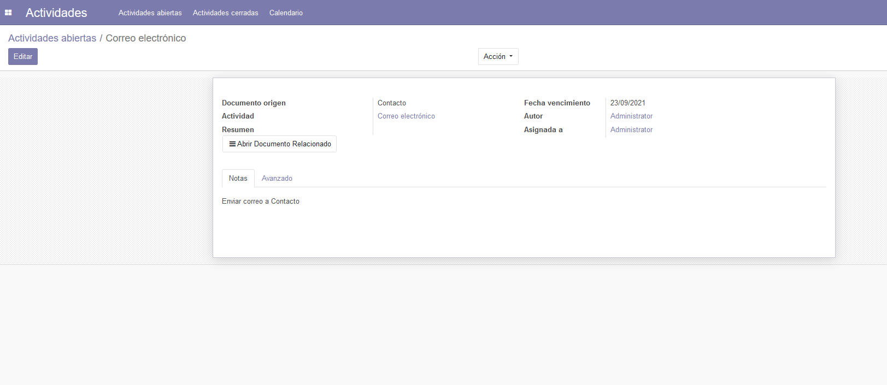

<section class="oe_container">
    <div class="oe_row oe_spaced">
        <h2 class="oe_slogan" style="color:#875A7B;">OpenERP Actividades</h2>
        <h3 class="oe_slogan">Modulo Addon para acceso directo a las Actividades con Calendario, ver documentos relacionados y registro de Actividades Cerradas.</h3>
        <div class="oe_demo oe_picture oe_screenshot">
            
        </div>
    </div>
</section>